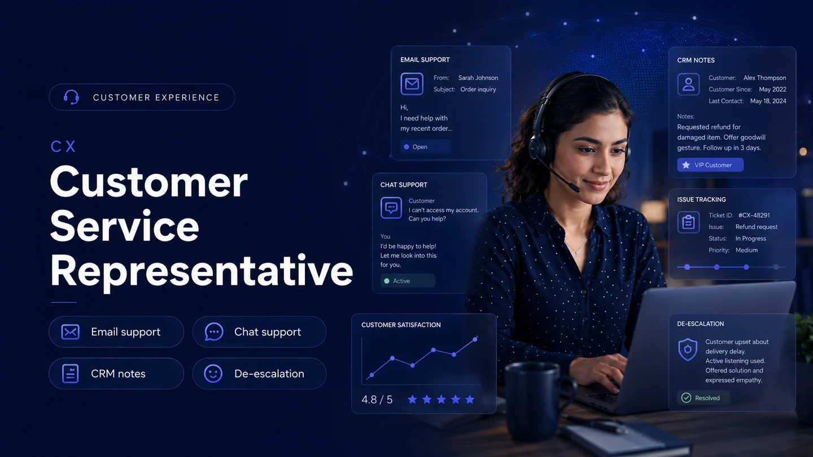
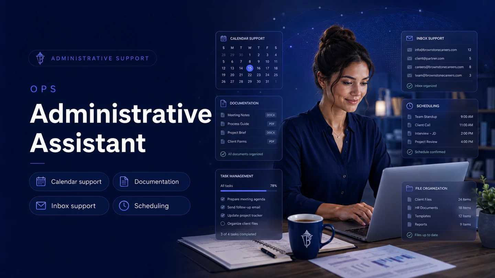
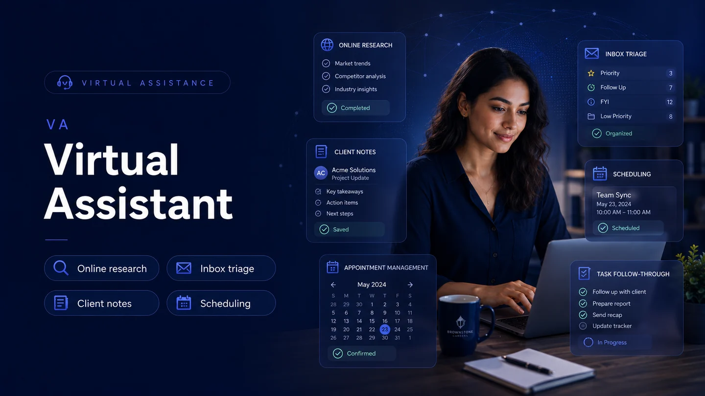
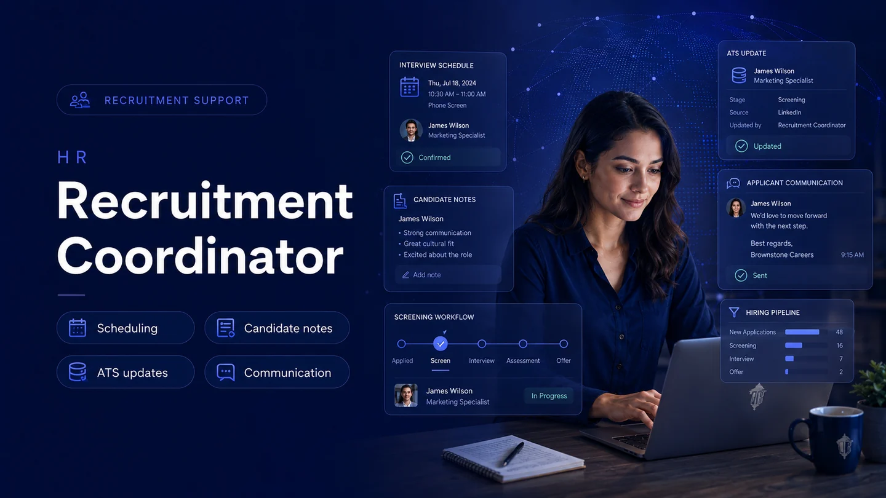

Role clarity
Each role pathway explains responsibilities, strong-fit profiles, tools, and practical expectations before a candidate applies.
Brownstone Careers helps candidates move from interest to opportunity through a clean, secure, and structured recruiting journey built for modern remote work.
Discover the right role pathway, understand the expectations, prepare for screening, apply securely, and get support through official Brownstone Careers channels.
Each role pathway explains responsibilities, strong-fit profiles, tools, and practical expectations before a candidate applies.
The process is structured around experience, work style, remote readiness, role-specific assessment, and professional communication.
Security notices, no-fee guidance, official contact channels, and privacy-conscious forms help candidates avoid confusion and fraud.
Start with the role that best matches your background, then submit a focused application with specific examples.

Support invoicing, reconciliation, expense records, reporting, document control, and confidential finance administration with accuracy and discretion.

Enter, verify, clean, organize, and update business information so remote teams can rely on accurate records and consistent data quality.

Deliver professional email, chat, helpdesk, or phone support through clear communication, issue tracking, documentation, and respectful follow-through.

Coordinate schedules, inboxes, documents, files, task lists, and operational follow-up so remote teams stay organized and productive.

Support busy professionals and teams with remote coordination, online research, inbox assistance, appointment management, and task follow-through.

Assist recruitment teams with candidate records, interview scheduling, applicant communication, screening notes, and hiring pipeline organization.
Brownstone Careers is structured around the tools candidates and remote teams commonly use for communication, documents, interviews, spreadsheets, collaboration, and professional visibility.
 Google Workspace
Google Workspace
 WhatsApp
LinkedIn
Slack
WhatsApp
LinkedIn
Slack
 Zoom
Zoom
 Indeed
Notion
Microsoft 365
Google Workspace
WhatsApp
LinkedIn
Slack
Zoom
Indeed
Notion
Indeed
Notion
Microsoft 365
Google Workspace
WhatsApp
LinkedIn
Slack
Zoom
Indeed
Notion
Every section now guides visitors through role discovery, fit checks, preparation, application, safety, and official support. The goal is to make the website feel rich, trustworthy, and built for serious remote-work candidates.
Submit your details, preferred role, availability, resume, and professional summary.
Answer structured questions about experience, work style, technology, reliability, and goals.
Complete a role-relevant exercise such as typing, accuracy, customer response, admin organization, or finance review.
Selected candidates discuss qualifications, communication style, expectations, and remote-work readiness.
Information, equipment, references, and eligibility may be checked where applicable.
Successful candidates receive agreement, confidentiality, orientation, and role onboarding documents.
Brownstone Careers looks for candidates who communicate well, follow instructions, protect confidential information, and can operate responsibly in remote environments.
Choose your role, describe your experience, and attach your resume for review.